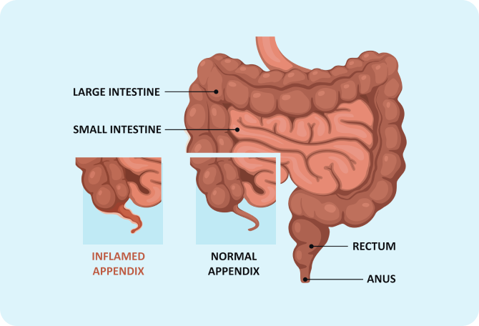

The Best Surgeons for
Appendics
We help you identify the best treatment approch for you with quality and hasselfree experience
You are in safe hands
-Rahul Dravid
Expert surgeon with 10+ years of experience
Advanced Surgical Technology
Personal Care Assistance
Finacial Aid & Assistance
High quality ,affordable surgical procedure
Quick Recovery
Minimal postoperative pain
USFD approved surgical equipment
What is appendicitis ?
Appendicitis is the inflammation or infection of the appendix. The appendix is a narrow, finger-shaped pouch that sits at the junction of your small and large intestines.
What causes Appendicitis ?

- Blockage in the appendix due to hardened stools or a foreign body .
- Intestinal worms
- Abdominal injury or trauma
- Inflammation in any part of the digestive tract
- Enlarged lymphoid follicles
- Abnormal growths in the digestive tract
Sudden pain in the lower-right side of the abdomen
Pain that begins around the navel (umbilicus) and drifts to the right side
Pain that worsens on coughing, sneezing, or sudden movements
Constipation
Diarrhoea
Nausea and vomiting
Abdominal bloating
Loss of appetite
Low-grade fever (between 99.5 °F to 102.2 °F)
Inability to pass gas
Physical Examination: The painful area is examined by applying gentle pressure and checking for rigidity
Imaging Techniques: X-rays, CT scans, MRIs, and abdominal ultrasounds are advised to detect inflammation of the appendix
Blood Test: A complete blood count (CBC) is prescribed to detect any bacterial infections and checking for rigidity
Urine Analysis : Rules out other potential causes of your symptoms, such as urinary tract infections and kidney stones
Pregnancy Test: Rules out an ectopic pregnancy, a pregnancy that happens outside of the uterus
Surgical Option
The standard treatment for appendicitis is the surgical removal of the appendix. Appendectomy is usually an emergency surgery and can be performed by the following ways
- Performed under general anaesthesia
- A large incision is made in the lower-right side of the abdomen
- The appendix is accessed and removed with the help of surgical instruments
- If the appendix has ruptured, the abdomen is washed with saline and a small tube is placed for draining the excess fluid
- The incision is closed with stitches or staples
- Performed under local or general anaesthesia
- Multiple small incisions are made near the belly button
- A cannula is used to inflate the abdomen with a harmless gas to improve visibility
- A laparoscope, a thin flexible tube with an attached camera, is inserted through the incisions along with other surgical instruments
- The appendix is located and removed
- A drain may be placed in the abdomen for a few days to remove excess fluid to avoid postoperative complications
- The incision is closed with stitches or staples
- A type of laparoscopic surgery
- Robotic hands perform the surgery, controlled by the surgeon at the console
- Lower risk of infections and blood loss
- Faster recovery time and shorter stay at the hospital
Why Practo ?
Expert surgeon with 10+ years of experience
We have the finest and some of the most qualified surgical specialists, each with 10+ years of experience, who will consult with you to determine and conduct the most appropriate surgical procedure for your condition.
Advanced Surgical Technology
You can expect the highest standards in surgeries and care with our cutting-edge modern medical technology, designed to provide you the most advanced level of medical care
Personal Care Assistance
A dedicated assistant will take care of your needs from your very first interaction with us through to the end of your treatment. They will be with you at every step of your journey-booking consultations with surgeons, getting a second opinion, finding the best hospital for your surgery, arranging medicines and lab tests, handling the insurance approvals, and coordinating admission and discharge formalities.
Finacial Aid & Assistance
We provide our customers with the highest level of satisfaction by ensuring 100% transparency in pricing. We offer the finest surgical experiences at competitive prices--with flexible payment options, no-cost EMI options, discounted medicines and lab tests, and support for a wide range of insurance policies.
Postoperative Care
Our personal care assistants will continue to stay in touch with you, even after the procedure, to book free followup consultations with your doctor as per your convenience. You will also receive dietary tips and instructions for your speedy recovery.
What happens if you delay the treatment/surgery?
Certain complications may arise if appendicitis is left untreated
Abscess formation: Pockets of pus may form within the appendix
Ruptured appendix: The appendix may spill bacteria and fecal matter into the abdominal cavity
Peritonitis: Inflammation of the abdominal inner lining may occur
Our doctors in
FAQ's
The exact function of the appendix is unclear. It is said to have played a role in requlating digestion.
Yes! You can live a normal life after the removal of your appendix, as it has no significant function in your body. You will not require any dietary restrictions or medications once you have completely recovered from the surgery.
Appendectomy is performed by a general surgeon, a laparoscopic surgeon, or a gastrointestinal surgeon.
A laparoscopic appendectomy is a minimally invasive procedure that is done with smaller incisions. Compared to an open surgery, the procedure is shorter and recovery is faster.
After an appendectomy, you have to follow your doctor's instructions carefully for a faster recovery and to avoid any complications. You need to take sufficient rest, have a high-fibre diet, drink lots of fluids, and avoid strenuous activities. It takes two to four weeks for complete recovery, after which you can resume your normal activities.
A laparoscopic appendectomy is a minimally invasive procedure that is done with smaller incisions. Compared to an open surgery, the procedure is shorter and recovery is faster.
Appendicitis can affect anyone. However, it is more common in those who have a family history of appendicitis. It is also slightly more common in males.
What customers say
Get Permenent treatment for
Appendicity
Our vision is to help mankind live healthier, longer lives by making quality healthcare accessible, affordable and convenient.
Locate Our Clinics